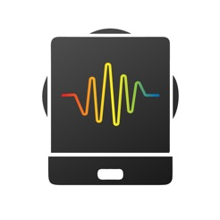

Extend Yourself - Skoog: Count the Beats
- Compose a second original song. This time, include fractional beats with different denominators. Write the color pattern so that your peers can play your song. Add the total number of beats for each measure or line.
- Change the settings to see how it changes the sounds. Change the scales and keys in the settings and try to play a song from the songbook. How do the changes affect the song?
- Download the free Skoog Scratch app. The Skoog Scratch app allows you to record your own sounds for the colors of Skoog.
